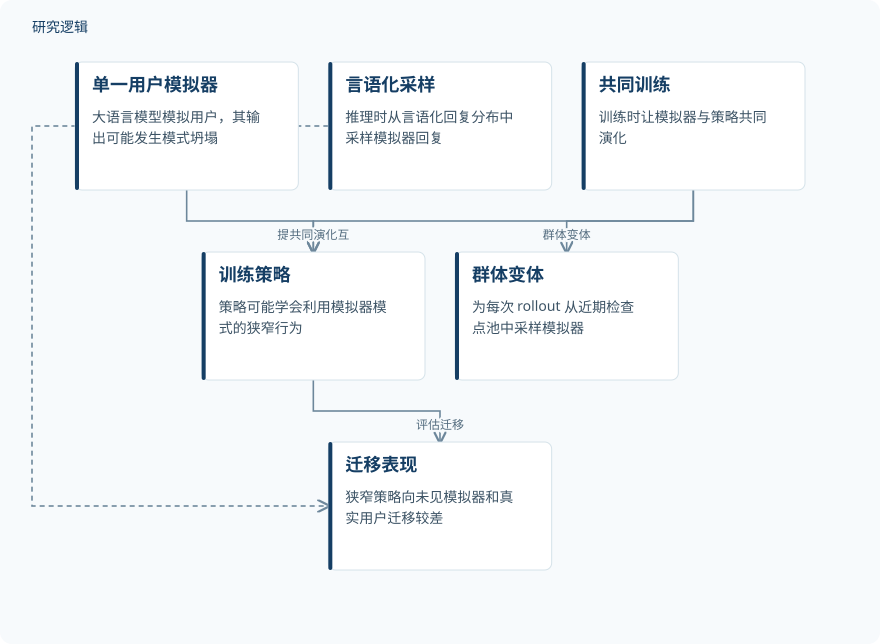

摘要解读
一个冻结的模拟器并不够：多智能体强化学习中的模拟器坍缩
One Frozen Simulator Is Not Enough: Simulator Collapse in Multi-Agent RL
解读更新 2026-11-27 22:20 · 依据公开摘要整理，未核验全文细节
用大语言模型模拟用户训练智能体，能否让智能体真正适应不同用户？这篇论文指出，依赖单一模拟器可能带来系统性的泛化失败，并探讨如何通过增加模拟行为的多样性缓解这一问题。
文章目录
单一用户模拟器为何可能误导训练
在人机交互的多智能体强化学习中，智能体通常与一个模拟用户的大语言模型进行训练。论文指出，这种设置可能出现“模拟器坍塌”：模拟器的输出模式发生坍塌，策略则学会利用这些模式的狭窄行为。
这种策略不一定能适应未见过的模拟器，也可能难以迁移到真实用户。问题因此不只是模拟器能否生成回复，还涉及训练过程中接触到的用户行为是否足够多样。
从回复采样到模拟器共同训练
论文形式化描述了模拟器坍塌，并提出两种解决方案。言语化采样用于推理阶段：先形成以自然语言表述的回复分布，再从中采样每条模拟器回复。
共同训练则用于训练阶段，类似自我博弈，让模拟器与策略共同演化，以避免策略利用固定的模式行为。其群体变体从近期检查点池中为每次 rollout 采样模拟器。论文还发布了用于多智能体强化学习中群体共同训练的开源框架 SCOPE。
依据摘要整理的模拟器训练思路


示意单模拟器训练的问题及摘要提出的两种方案，不代表论文原图。
下载 SVG图示关系说明
实线表示相邻阶段的信息流，虚线表示跨阶段联系或反馈。
单一用户模拟器 → 训练策略：提供训练交互；训练策略 → 迁移表现：评估迁移；言语化采样 → 迁移表现：改变回复采样；共同训练 → 训练策略：共同演化；共同训练 → 群体变体：群体变体
未见场景的成功率与策略多样性
作者在 Persuasion for Good、tau^2-bench 和 CooperBench 上验证了两种方案。摘要报告，相比单模拟器强化学习，言语化采样使留出测试成功率最高提升 9%，共同训练将提升进一步推至 14%。
摘要还称，真实用户研究显示了类似幅度的提升；两种方案也保留了在单模拟器强化学习下会坍塌的策略多样性。这些结果支持关注模拟器多样性，但摘要未给出各基准的逐项结果。
摘要尚不能回答哪些验证细节
摘要没有报告真实用户研究的样本规模与构成，也未说明留出测试的具体划分、各比较方法的完整设置或结果波动。因此，仅凭摘要难以判断不同用户群体、模拟器和任务条件下的效果范围。
阅读启发：检查模拟用户的多样性
对于使用大语言模型模拟用户的智能体研究，一个值得追问的问题是：策略表现提升是否依赖特定模拟器的行为模式？进一步阅读论文时，可关注留出模拟器与真实用户的比较方式，以及策略多样性的衡量方法。
以上为本站阅读启发与建议，不是论文已验证的结论。